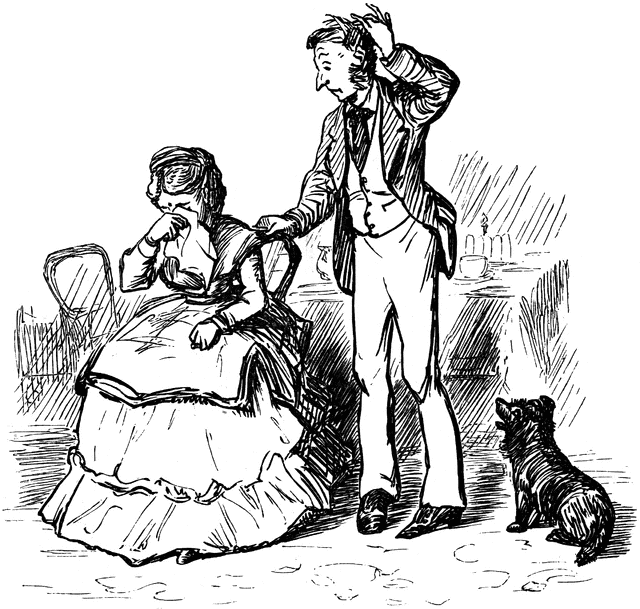
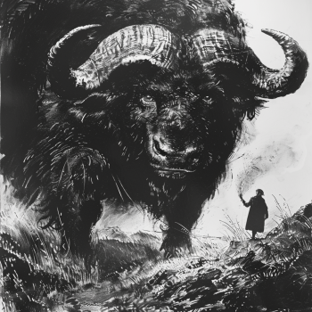
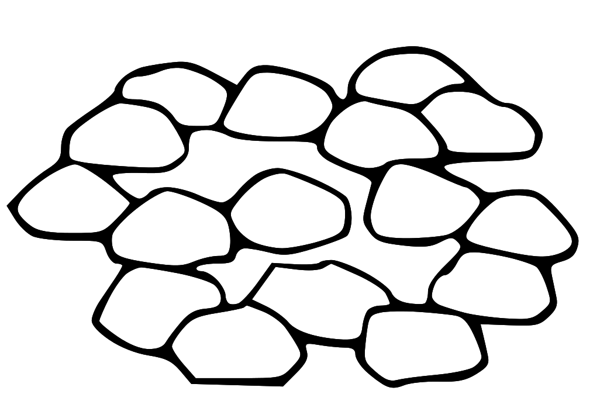
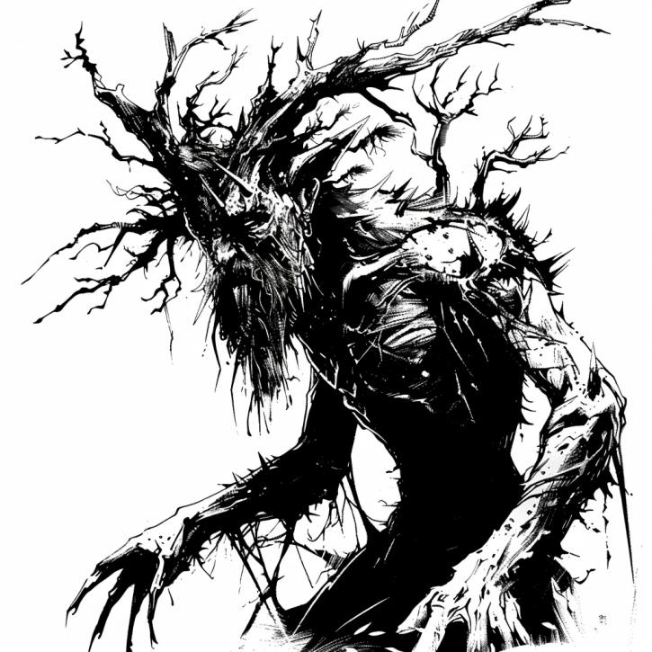

Introduction
Welcome to the Whisper Bay Folklore Research Center! We are dedicated to uncovering and preserving the rich tapestry of legends and stories that make Whisper Bay a unique and enchanting place. Our team of local folklore enthusiasts and researchers delve into the mysteries of our village's past, exploring everything from ghostly apparitions to ancient standing stones.
Inspired by the quaint British countryside, our center aims to provide an immersive experience for visitors and locals alike. Whether you're here to uncover the secrets of Morwenna's Tears, encounter The Bull of the Moor, or listen to the whispers of the ancient stones, the Whisper Bay Folklore Research Center is your portal to a world of wonder and mystery all without having to leave your computer!
Join us on a digital trip as we journey through time and explore the stories that have shaped our community. We invite you to immerse yourself in the folklore of Whisper Bay and discover the magic that lies within.
Morwenna's Tears
One of Whisper Bay's most enduring legends is the tale of Morwenna, a beautiful maiden who lived in the village centuries ago. Morwenna fell in love with a tin miner named Taran, but their love was forbidden due to a longstanding feud between their families. One fateful night, Taran was caught in a mine collapse and tragically died. Heartbroken, Morwenna wandered the cliffs above Whisper Bay, her tears forming a small, hidden waterfall that locals now call "Morwenna's Tears."
Legend has it that those who bathe in its waters are said to gain the ability to see glimpses of the future. However, these visions come at a price: each time one looks into the future, a memory of the past is forgotten.
Back to Home
The Bull of the Moor
A more terrifying tale is that of the Bull of the Moor, a creature that has been sighted near Whisper Bay on several occasions. Described as a large, black bull-like animal with glowing eyes, the Beast is believed to be a phantom that prowls the moorlands at night.
According to local folklore, the Beast is the spirit of a witch’s familiar from the 17th century. The witch, known as Old Maud, was said to have been wrongfully accused of witchcraft and executed. Her familiar, a large black bull, disappeared into the moors and has been haunting them ever since. It is told that every person it kills in revenge for it's mistresses murder makes it grow even more. The most recent encounters describe a towering beast, who's horns nearly touch the top of the trees
Back to Home
The Whispering Stones
Near the cliffs of Whisper Bay lies a circle of ancient standing stones, known to locals as the Whispering Stones. These stones are believed to be enchanted, and the folklore surrounding them is rich with tales of magic and mystery.
Legend holds that the stones were placed there by the druids, who used them for rituals and ceremonies. During the summer solstice, it is believed that the stones come to life and whisper the history of the land to those who are pure of heart. But other, more darker tales speak of how these druids were forced to perform sacrifices in order to ensure a bountiful harvest. They also claim that dark times ask for ever greater sacrifices to stave off the impending doom. Perhaps the red stains on these stones are indeed caused by druids forced to sacrifice one of their own or perhaps it's a specific kind of lichen that only grows on these stones. Who can tell?!
Back to Home
The Phantom Miner
The closure of the tin mine three years ago has rekindled stories of the Phantom Miner, a spectral figure that is said to haunt the old mining tunnels. The miner is believed to be the ghost of a worker who died in a tragic accident during the mine's heyday.
According to the legend, the Phantom Miner appears to warn of impending disasters or to guide lost souls to safety. Some say that the Phantom Miner is a benevolent spirit, watching over the village and its people.
The stories about the phantom miner closly remember those of "Knockers". But they are distinctly different in a few key areas. Although both are considered to be spirits from deceased miners, knockers are more mischievous and are often reported to be only 2 feet tall. Although knockers have been reported in the mines, they are rare. It is however, still the reason that many people leave gifts of food and tobacco near the entrance of the mines and also why it's considered bad luck to whistle in a mine!
UPDATE!
If you have recently seen something near the mines, please come into contact with us!
Back to Home
Piskies
Look for piskies across the Cornish moorland. They are especially prevalent around historical sites like stone circles and ancient Dolmans. There have been quite a few reports about them at the whispering stones. A Cornish piskie is a childlike being that can be helpful or mischievous depending on how they are treated. Piskies appear similar to spriggans, and both tend to dwell in the same locations. Spriggans appear around ancient sites, in the form of a wizened old man. However, piskies will often help those who treat them with respect, while spriggans are generally mischievous and unpleasant, especially to those who have treated the fairy folk poorly.
Cornish piskies should also not be confused with other fairy folk. An identifying feature between Cornish piskies and fairies or pixies from elsewhere is that piskies do not have wings.
In Cornish folklore, Joan the Wad is the Queen of the Piskies. Legend has it that she possesses both good and evil traits. Some say that her light – wad is an old word for torch – guides weary travellers to safety. Yet others believe that she leads travellers off the path to their doom. These tales are the origin of ‘pixilated’ – not the be confused with ‘pixelated’ – meaning those lost in thought or whimsical.
As with the phantom miner Whisper Bay has it's own local version of Pisky. A group of beings called Listeners-at-the-Door, they are parasitic piskies which feed on human suffering. They do this by attaching themselves to a host, filling the host with an insatiable desire to seek out the particular kind of suffering that sustains their Listener. Many are the tales of those who gloat at the misfortune of others, of those who delight in the scent of fear, of those who wallow in the self-pity of unrequited or forbidden love, or of those who revel in the sight of spilled blood. Such dark desires are said to be the work of the Listeners, using their hosts to fill their stomachs.
Back to Home